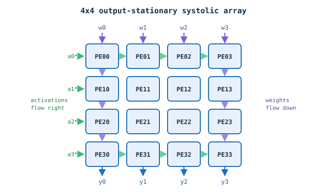
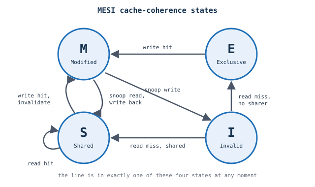
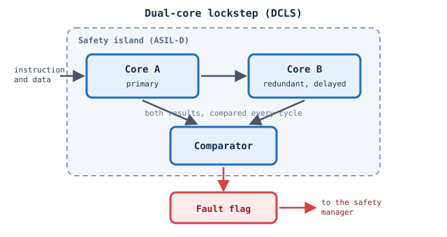
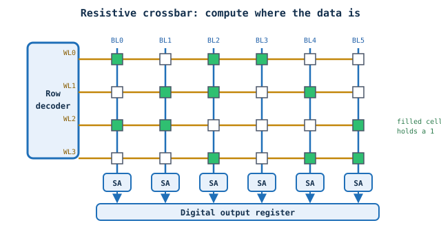

Hardware block diagrams, animated.
IPMotion draws chip and IP-block diagrams in Manim and plays a story over them: a read request travelling through a crossbar, a handshake between master and slave. Describe the story, paste your block diagram, and get a Python script you run on your own machine. Bring your own LLM key. We run nothing.
Open the generatorHow it works, in 17 seconds
No key and no setup needed to look around. The video below and every example on this page play as they are. A key is only needed if you want the generator to write a script for your own diagram.
This explainer was made by IPMotion itself — hand-written against the same ipmotion_lib the generator writes against, and passed by the same geometric linter that checks generated scripts, with zero errors and zero warnings. The product explaining itself.
What IPMotion draws
These eight are reference animations drawn by the IPMotion engine: three redrawn from measured positions on a published chip diagram, five built from structures described in the literature. Every one of them is cited, and every one passes the same geometric checker the generator's output is judged by. They are also the worked examples the generator learns from. The generator below writes its own script in one shot from your text, so its first result will be rougher than these.
Darjeeling
OpenTitan Darjeeling, 44 blocks plus 5 edge labels, in 4 regions, drawn from the reference picture. Story: Ibex reads from the UART / I2C.
Explore ▸ hover, or tap on a phoneDarjeeling

Prompt
Show Ibex reading from the UART / I2C.
Story
- Idle: nothing is happening yet
- Step 1: Ibex Core sends a read request
- Step 2: Main TL-UL Crossbar passes it to the Low-Speed domain
- Step 3: Peri TL-UL Cross bar sends it to 1 x UART / 1x I2C
- Step 4: 1 x UART / 1x I2C answers
- Step 5: The response travels back over the same links
- Step 6: Ibex Core receives the data. Read complete
Model used
No model used. This animation was made for developing a better RAG framework for IPMotion.
Earlgrey
OpenTitan Earlgrey, 40 blocks in 4 regions. The same engine on a different chip. Story: Ibex reads from the 4x UART.
Explore ▸ hover, or tap on a phoneEarlgrey

Prompt
Show Ibex reading from the 4x UART.
Story
- Idle: nothing is happening yet
- Step 1: Ibex Core sends a read request
- Step 2: The TL-UL Crossbar passes it to the peripheral side
- Step 3: The peripheral TL-UL Cross bar sends it to the 4x UART
- Step 4: The 4x UART answers
- Step 5: The response travels back over the same links
- Step 6: Ibex Core receives the data. Read complete
Model used
No model used. This animation was made for developing a better RAG framework for IPMotion.
Peppermint
OpenTitan Peppermint, 24 blocks plus 9 edge labels, across two power domains. A third chip on the same engine. Story: Ibex reads from the Retention SRAM.
Explore ▸ hover, or tap on a phonePeppermint

Prompt
Show Ibex reading from the Retention SRAM in the always-on domain.
Story
- Idle: nothing is happening yet
- Step 1: Ibex Core sends a read request
- Step 2: The Main TL-UL Crossbar passes it to the always-on side
- Step 3: The AON TL-UL Cross bar sends it to the Retention SRAM
- Step 4: The Retention SRAM answers
- Step 5: The response travels back over the same links
- Step 6: Ibex Core receives the data. Read complete
Model used
No model used. This animation was made for developing a better RAG framework for IPMotion.
AXI read handshake
A small master/slave example: address, data and valid/ready channels, step by step.
Explore ▸ hover, or tap on a phoneAXI read handshake

Prompt
AXI4 read handshake between a master and a slave, cycle by cycle.
Story
- Cycle 1: Master asserts ARVALID=1 & ARADDR=0x1000
- Cycle 2: Slave asserts ARREADY=1. AR Handshake completes.
- Cycle 3: Internal memory read latency. ARVALID deasserted.
- Cycle 4: Slave drives RDATA=0xCAFE, RVALID=1, RLAST=1
- Cycle 5: Master asserts RREADY=1. Read Data Handshake completes!
- Transaction Complete: Read data 0xCAFE received successfully.
Model used
No model used. This animation was made for developing a better RAG framework for IPMotion.
4x4 systolic array
Sixteen processing elements multiplying and accumulating a matrix product. Activations flow right, weights flow down, and a whole diagonal fires at once.
Explore ▸ hover, or tap on a phone4x4 systolic array

What it shows
Sixteen processing elements multiplying and accumulating a matrix product. Activations flow right, weights flow down, and a whole diagonal fires at once.
Steps
- Activations enter from the left, one row each
- Weights are pushed down each column
- Cycle by cycle, every PE on a diagonal computes at the same moment
- Partial sums leave the bottom of each column
Source
H.T. Kung and C.E. Leiserson, “Systolic Arrays (for VLSI)”, Sparse Matrix Proceedings, 1978. N.P. Jouppi et al., “In-Datacenter Performance Analysis of a Tensor Processing Unit”, ISCA 2017.
Model used
No model used. Drawn by the IPMotion engine, and used as a worked example the generator can learn from.
MESI cache coherence
One cache line moving between Modified, Exclusive, Shared and Invalid as bus events arrive. A state machine, not a floorplan.
Explore ▸ hover, or tap on a phoneMESI cache coherence

What it shows
One cache line moving between Modified, Exclusive, Shared and Invalid as bus events arrive. A state machine, not a floorplan.
Steps
- The line starts Invalid: this cache does not have it
- A read miss with no other sharer makes it Exclusive
- A write hit makes it Modified, dirty and private
- Another core reads it: write back and drop to Shared
- Another core writes: this copy becomes Invalid
Source
M.S. Papamarcos and J.H. Patel, “A Low-Overhead Coherence Solution for Multiprocessors with Private Cache Memories”, ISCA 1984.
Model used
No model used. Drawn by the IPMotion engine, and used as a worked example the generator can learn from.
Dual-core lockstep
Two identical cores running the same instruction, one comparator deciding whether they agree, and a fault flag when they do not.
Explore ▸ hover, or tap on a phoneDual-core lockstep

What it shows
Two identical cores running the same instruction, one comparator deciding whether they agree, and a fault flag when they do not.
Steps
- The same instruction is issued to both cores
- Core B runs it two cycles later, so one glitch cannot hit both
- Both results arrive at the comparator
- They agree, so nothing is raised
- A bit flips in Core B, the results differ, and the fault flag goes up
Source
ARM, “Cortex-R5 Technical Reference Manual” (redundant core comparison and the decorrelating delay). ISO 26262-5, hardware requirements for ASIL-D.
Model used
No model used. Drawn by the IPMotion engine, and used as a worked example the generator can learn from.
Compute-in-memory crossbar
A resistive memory array where the computation happens where the data already is. Wordlines open a row, every cell drives its bitline, and the sense amplifiers turn current into bits.
Explore ▸ hover, or tap on a phoneCompute-in-memory crossbar

What it shows
A resistive memory array where the computation happens where the data already is. Wordlines open a row, every cell drives its bitline, and the sense amplifiers turn current into bits.
Steps
- The row decoder drives one wordline high
- Every cell on that row drives its own bitline at the same moment
- The sense amplifiers resolve all six columns together
- The digital output register takes the row
- Four rows, four cycles, and the data never moved
Source
A. Shafiee et al., “ISAAC”, ISCA 2016. P. Chi et al., “PRIME”, ISCA 2016.
Model used
No model used. Drawn by the IPMotion engine, and used as a worked example the generator can learn from.
What the generator makes today
The four above are drawn by the engine from measured positions. This one is not: it is the real output of the Generate button, given the Peppermint diagram as plain text, one try, no checking and no fixes. It gets both power domains and every block name exactly right. It also misses wires and oversizes the two domain titles. That is honestly where the one-shot generator stands today.
Generator
Your script
Local setup
First time? Follow Set up your computer below.
The script imports ipmotion_lib, so run it inside the IPMotion repo:
git clone https://github.com/yashv373/IPMotion cd IPMotion pip install "manim==0.21.0" # save the downloaded file here as script.py, then: manim -pql script.py YourSceneName # optional geometric check: python -m ipmotion.lint script.py
Replace YourSceneName with the class name in the script. No LaTeX needed. Use -qh for a sharper render.
Not happy with the first result? Keep going.
This is one shot with no checking, so a first draft is normal. You do not have to start again:
- Ask any chat assistant to fix it. The file is ordinary Manim code, so paste it into ChatGPT, Claude, Gemini or whichever you already pay for, and say what is wrong in plain words — "two blocks overlap", "the UART arrow is missing", "make the title smaller". Then run it again.
- Let the checker tell you what is wrong first. In the repo, run
python -m ipmotion.lint script.py. It lists overlapping text, labels too small to read, wires ending in empty space and anything outside the frame. Paste that list in with the script and the assistant has something precise to work from. - Change your input, not just the script. Most misses come from the diagram text. Add the connection it skipped, or write a name exactly as you want it drawn, and generate again.
Where this is going. That back-and-forth is something IPMotion should do for you, not something you should have to drive. The generate → check → repair loop already runs locally in the repo; bringing it into this page, so the site hands you a script it has already checked and corrected a few times, is the next direction for IPMotion.
Set up your computer
One-time setup, about 15 minutes. You need Python, FFmpeg (turns frames into a video), Git and Manim. Nothing here needs LaTeX.
- Python 3.10 to 3.12. python.org/downloads. On Windows tick "Add python.exe to PATH" in the installer. Check:
python --version - FFmpeg. ffmpeg.org/download. Easiest: Windows
winget install Gyan.FFmpeg, macOSbrew install ffmpeg, Ubuntusudo apt install ffmpeg. Restart the terminal, then check:ffmpeg -version - Git. git-scm.com/downloads. It is only used to copy the IPMotion repo to your machine.
- Manim Community 0.21.
pip install "manim==0.21.0". Linux also needs the Cairo and Pango system libraries; see the official Manim install guide if the install fails. Check:manim --version - The IPMotion library.
git clone https://github.com/yashv373/IPMotion, thencd IPMotion. The generated script importsipmotion_libfrom this folder, so it must sit inside it.
Run your script
- Save the downloaded file inside the IPMotion folder as
script.py. The scene name is the one afterclassin the script (for exampleAxiReadHandshakeScene). - Render and open it:
manim -pql script.py YourSceneName.-popens the video when done,-qlis fast and low quality. Use-qmor-qhfor sharper output. - The video is saved under
media/videos/script/. For a GIF add--format gif. - Optional check for overlaps and tiny text:
python -m ipmotion.lint script.py.
Stuck? Run the version checks above first. Most failures are FFmpeg or Python missing from PATH.
About
 IPMotion turns a hardware block diagram and a short story into a Manim animation.
Ideated by Yashvardhan Singh | Development by Claude Code. Source: github.com/yashv373/IPMotion.
IPMotion turns a hardware block diagram and a short story into a Manim animation.
Ideated by Yashvardhan Singh | Development by Claude Code. Source: github.com/yashv373/IPMotion.